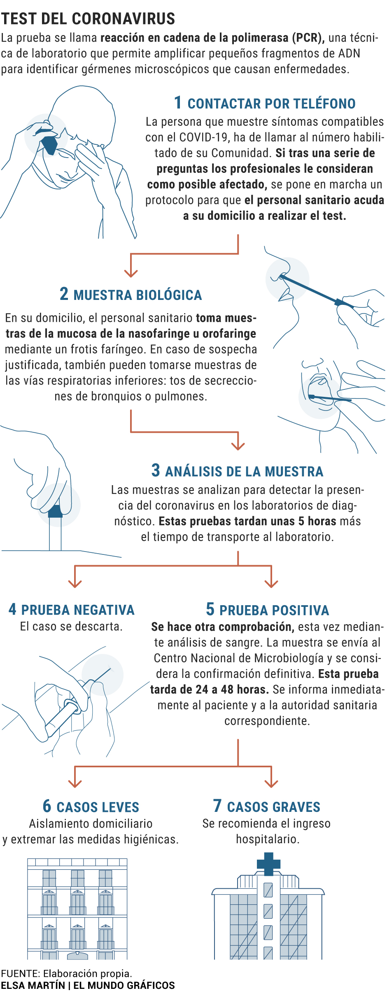

COVID-19
Para realizar una prueba que verifique la presencia del coronavirus Covid-19, se toman muestras de la mucosa de la nasofaringe u orofaringe mediante un frotis faríngeo con una torunda. Después, se hace una prueba denominada PCR, que permite identificar el ARN viral, explica Ángel Asensio, jefe del servicio de Medicina Preventiva del Hospital Puerta de Hierro de Majadahonda (Madrid). Esta prueba tarda unas tres horas en arrojar resultados, aunque "es esperable que en breve se dispongan de kits comerciales que lo automaticen y lo hagan en mucho menos tiempo".
